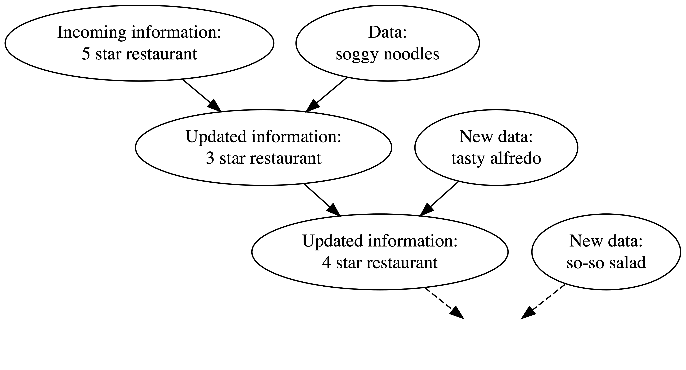
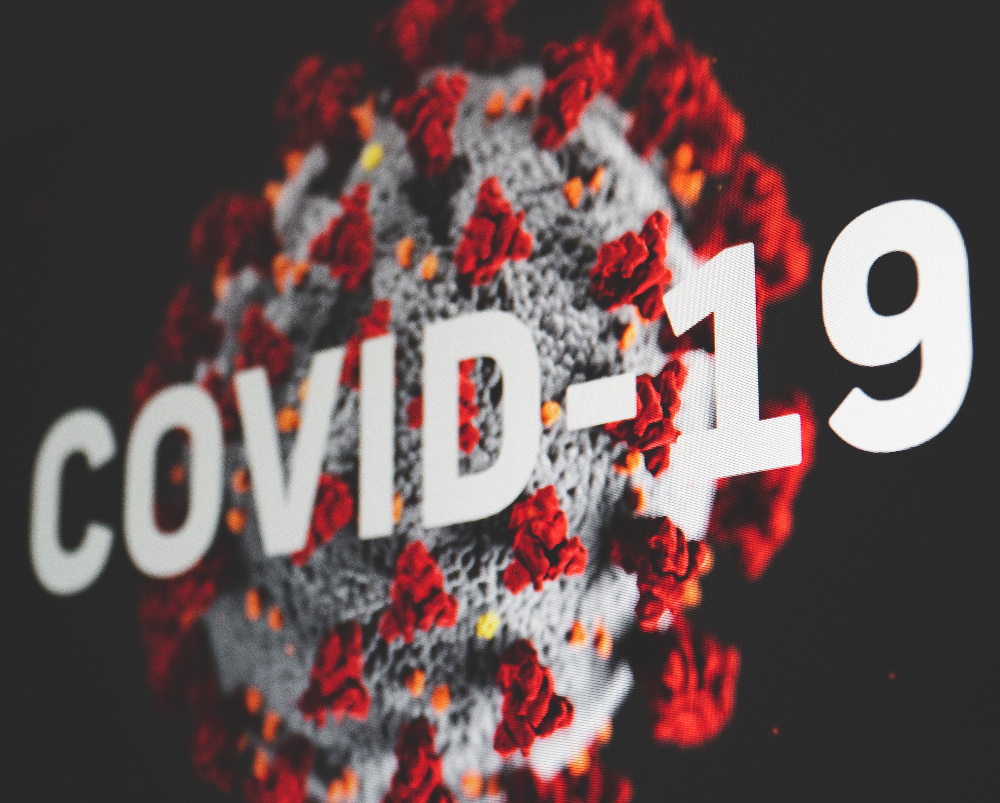

20 Bayesian Inference
The inference methods we have learned so far assume that unknown (population) parameters to be estimated or tested are constants. They are fixed and their values do not change. In other words, the parameters are not random variables, and the uncertainty that arises when estimating them is entirely due to sampling variation, not the variability of the parameters themselves. Additionally, when dealing with uncertainty, we use relative frequency to describe probabilities. Lots of times the answer to our questions relies on repetitions of experiments or trials. These methods adopt the so-called frequentist philosophy. The frequentist approach, also known as the classical approach, has dominated the statistics community since the early 20th century. This dominance followed the development of a comprehensive inference framework by several great statisticians, such as Ronald Fisher, Jerzy Neyman, and Egon Pearson. This framework, which includes confidence intervals, hypothesis testing, p-values, and statistical significance, is taught in every introductory statistics course.
In fact, there is another way of thinking about statistical inference: the Bayesian philosophy. The Bayesian approach did not emerge after the frequentist approach; rather, it has historical roots that trace back to Bayes’ theorem (Bayes’ rule), named after Thomas Bayes. People in the late 18th or early 19th century already used the Bayesian philosophy to tackle problems. For instance, Pierre-Simon Laplace used the Bayesian theorem to calculate the probability that the sun would rise the next day. However, the Bayesian approach lost popularity later on because as problems became more complex, solving them within the Bayesian framework became very tedious and time-consuming, especially given the lack of powerful computing resources at the time. With the advancement of computing power starting in the late 20th century, more statisticians and scientists began to embrace the Bayesian approach.
It is important to understand the frequentist and Bayesian philosophies, particularly their differences, advantages, and disadvantages. Depending on the research question and available resources, one method may be more suitable than the other. Alternatively, it may be beneficial to combine these two paradigms to leverage the advantages of both. Currently, introductory statistics courses focus heavily on the frequentist approach. Given the ease of computation and the increasing use of Bayesian methods in scientific research, it is time to introduce more Bayesian thinking to STAT 101 students, not just one lecture of Bayes theorem.
20.1 Bayesian Thinking
Before we dive into Bayesian statistics, let’s take a quiz to determine whether you currently lean more towards a Bayesian or frequentist mindset. This quiz is adapted from Bayes Rules, a great new book on Bayesian statistics. I encourage you to spend some time on this if you would like to delve deeper.
-
When flipping a fair coin, we say that “the probability of flipping Heads is 0.5.” How do you interpret this probability? (a = 1 pt, b = 3 pts, c = 2 pts)
- If I flip this coin over and over, roughly 50% will be Heads.
- Heads and Tails are equally plausible.
- Both a. and b. make sense.
-
An election is coming up and a pollster claims that candidate Yu has a 0.9 probability of winning. How do you interpret this probability? (a = 1 pt, b = 3 pts, c = 1 pt)
- If we observe the election over and over, candidate Yu will win roughly 90% of the time.
- Candidate Yu is much more likely to win than to lose.
- The pollster’s calculation is wrong. Candidate Yu will either win or lose, thus their probability of winning can only be 0 or 1.
-
Two claims. (a = 3 pts, b = 1 pt)
(1) Ben claims he can predict the coin flip outcome. To test his claim, you flip a fair coin 8 times and he correctly predicts all.
(2) Emma claims she can distinguish natural and artificial sweeteners. To test her claim, you give her 8 samples and she correctly identifies each.
In light of these experiments, what do you conclude?
- You’re more confident in Emma’s claim than Ben’s claim.
- The evidence supporting Ben’s claim is just as strong as the evidence supporting Emma’s claim.
-
Suppose that during a doctor’s visit, you tested positive for COVID. If you only get to ask the doctor one question, which would it be? (a = 3 pts, b = 1 pt)
- What’s the chance that I actually have COVID?
- If in fact I don’t have COVID, what’s the chance that I would’ve gotten this positive test result?
Time tally up your quiz score. Are you frequentist or Bayesian? Totals from 4–5 indicate that your current thinking is fairly frequentist, whereas totals from 9–12 indicate alignment with the Bayesian philosophy. In between these extremes, totals from 6–8 indicate that you see strengths in both philosophies.
- Totals 4-5: your thinking is frequentist
- Totals 9-12: your thinking is Bayesian

- Totals 6-8: you see strengths in both philosophies
You are a frequentist or Bayesian? Are those confidence interval or hypothesis testing thing all Greek to you? Maybe it is because
20.2 The Meaning of Probability: Relative Frequency vs. Relative Plausibility
The frequentist interprets probability as the long-run relative frequency of a repeatable experiment. We’ve seen this interpretation before in Chapter 6. We know that using relative frequencies as probability has several issues:
üòï How large of a number is large enough?
üòï Meaning of ‚Äúunder similar conditions‚Äù
üòï The relative frequency is reliable under identical conditions?
üëâ We only obtain an approximation instead of exact value.
üòÇ How do you compute the probability that Chicago Cubs wins the World Series next year?

In statistical inference, our research questions or events of interest are often not repeatable or very difficult to replicate. For example, what is the probability that Donald Trump will win the 2024 presidential election? What is the probability that the Milwaukee Bucks will win the 2025 NBA championship? What would the mean income level for males be if every man was required to serve in the military for two years? Still many political scientists, sport analysts, or economists are answering those questions, right?! To rationalize their arguments, and to better answer these types of research questions, we must interpret probability in a different way.
In the Bayesian philosophy, a probability measures the relative plausibility of an event.
For the statement “candidate A has a 0.9 probability of winning”, a frequentist might say the conclusion is wrong or weirdly say in long-run hypothetical repetitions of the election, candidate A would win roughly 90% of the time. A Bayesian would say based on analysis the candidate A is 9 times more likely to win than to lose.
Back to our Quiz 1. For the statement “the probability of flipping Heads is 0.5”, a frequentist would conclude that if we flip the coin over and over, roughly 1/2 of these flips will be Heads. A Bayesian would conclude that Heads and Tails are equally likely.

20.3 Prior Information and Empirical Evidence
How can we live if we don’t change? - Beyoncé. Lyric from “Satellites.”
Everybody changes their mind. You likely even changed your mind in the last minute. For example, suppose there’s a new Italian restaurant in your town. It has a 5-star online rating and you love Italian food! Thus, prior to ever stepping foot in the restaurant, you anticipate that it will be quite delicious. On your first visit, you collect some edible data: your pasta dish arrives a soggy mess. Weighing the stellar online rating against your own terrible meal (which might have just been a fluke), you update your knowledge: this is a 3-star not 5-star restaurant. Willing to give the restaurant another chance, you make a second trip. On this visit, you’re pleased with your Alfredo and increase the restaurant’s rating to 4 stars. You continue to visit the restaurant, collecting edible data and updating your knowledge each time.

We use data and prior beliefs to update our knowledge (posterior), and repeating.
We continuously update our knowledge about the world as we accumulate lived experiences, or collect data.
Figure 20.2 shows Bayesian Knowledge-building Process. If you’re an environmental scientist, yours might be an analysis of the human role in climate change. You don’t walk into such an inquiry without context – you carry a degree of incoming or prior information based on previous research and experience. Naturally, it’s in light of this information that you interpret new data, weighing both in developing your updated or posterior information.

Frequentist relies on (limited) data only. In Question 3, in a frequentist analysis, “8 out of 8” is “8 out of 8” no matter if it’s in the context of Ben’s coins or Emma’s sweeteners.
- Equally confident conclusions that Ben can predict coin flips and Emma can distinguish between natural and artificial sweeteners.

But do you really believe Ben‚Äôs claim 100%? ü§î üòï
In fact, we judge their claim before evidence are collected, don‚Äôt we? ü§î
You probably think Ben overstates his ability but Emma’s claim sounds relatively reasonable, right?
Frequentist throws out all prior knowledge in favor of a mere 8 data points.
Bayesian analyses balance and weight our prior experience/knowledge/belief and new data/evidence to judge a claim or make a conclusion.

- We are not stubborn! If Ben had correctly predicted the outcome of 1 million coin flips, the strength of this data would far surpass that of our prior judgement, leading to a posterior conclusion that perhaps Ben is psychic!

20.4 Asking Different Questions
In Question 4,
- Bayesians answer (a) what’s the chance that I actually have COVID?
- Frequentists answer (b) if in fact I do not have COVID, what’s the chance that I would’ve gotten this positive test result?

| Test Positive | Test Negative | Total | |
|---|---|---|---|
| COVID | 3 | 1 | 4 |
| No COVID | 9 | 87 | 96 |
| Total | 12 | 88 | 100 |
\(H_0\): Do not have COVID vs. \(H_1\): Have COVID
A frequestist assesses the uncertainty of the observed data in light of an assumed hypothesis \(P(Data \mid H_0) = 9/96\)
A Bayesian assesses the uncertainty of the hypothesis in light of the observed data \(P(H_0 \mid Data) = 9/12\)
A Bayesian analysis would ask: Given my positive test result, what’s the chance that I actually have the disease? Since only 3 of the 12 people that tested positive have the disease (Table 1.1), there’s only a 25% chance that you have the disease. Thus, when we take into account the disease’s rarity and the relatively high false positive rate, it’s relatively unlikely that you actually have the disease. What a relief.
Since disease status isn’t repeatable, the probability you have the disease is either 1 or 0 – you have it or you don’t. To the contrary, medical testing (and data collection in general) is repeatable. You can get tested for the disease over and over and over. Thus, a frequentist analysis would ask: If I don’t actually have the disease, what’s the chance that I would’ve tested positive? Since only 9 of the 96 people without the disease tested positive, there’s a roughly 10% (9/96) chance that you would’ve tested positive even if you didn’t have the disease.
20.5 Bayesian Model
Fake News
- Tell if an incoming article is fake. The usage of an ! might seem odd for a real article. The exclamation point data is more consistent with fake news.
- Prior info: 40% of the articles are fake
# type n percent
# fake 60 0.4
# real 90 0.6
# Total 150 1.0
-
Data come in: Check several fake and real articles, and found
!is more consistent with fake news.
# title_has_excl fake real
# FALSE 44 88
# TRUE 16 2
# Total 60 9020.5.1 Bayesian Updating Rule

\(F\): an article is fake.
The prior probability model
| Event | \(F\) | \(F^c\) | Total |
|---|---|---|---|
| Probability \(P(\cdot)\) | 0.4 | 0.6 | 1 |
# title_has_excl fake real
# FALSE 44 88
# TRUE 16 2
# Total 60 90\(D\): an article title has exclamation mark.
Conditional probability: \(P(D \mid F) = 16/60 = 0.27\); \(P(D \mid F^c) = 2/90 = 0.02\).
-
Opposite position:
- Know the incoming article used
!(observed data) - Don’t know whether or not the article is fake (what we want to decide).
- Know the incoming article used
Compare \(P(D \mid F)\) and \(P(D \mid F^c)\) to ascertain the relative likelihoods of observed data \(D\) under different scenarios of the uncertain article status.
Since exclamation point usage is so much more likely among fake news than real news, this data provides some evidence that the article is fake To help distinguish this application of conditional probability calculations from that when D is uncertain and F is known, we’ll utilize the following likelihood function notation.
20.5.2 Likelihood Function
- Likelihood function \(L(\cdot\mid D)\):
\[L(F \mid D) = P(D \mid F) \text{ and } L(F^c \mid D) = P(D \mid F^c)\]
- When \(F\) is known, the conditional probability function \(P(\cdot \mid F)\) compares the probabilities of an unknown event \(D\), \(D^c\), occurring with \(F\): \[P(D \mid F) \text{ vs. } P(D^c \mid F)\]
- When \(D\) is known, the likelihood function \(L(\cdot \mid D) = P(D \mid \cdot)\) evaluates the relative compatibility of data \(D\) with \(F\) or \(F^c\): \[L(F \mid D) \text{ vs. } L(F^c \mid D)\]
| Event | \(F\) | \(F^c\) | Total |
|---|---|---|---|
| Probability \(P(\cdot)\) | 0.4 | 0.6 | 1 |
| Likelihood \(L(\cdot \mid D)\) | 0.27 | 0.02 | 0.29 |
- The likelihood function is not a probability function!
20.5.3 Bayes’ Rule
\[\begin{align*} P(F \mid D) &= \frac{P(F \cap D)}{P(D)}\\ &= \frac{L(F \mid D)P(F)}{P(D)}\end{align*}\]
\[\text{posterior = } \frac{\text{likelihood} \cdot \text{prior }}{ \text{normalizing constant}} \]
- The normalizing constant \(P(D)\) is known as marginal likelihood or evidence.
20.5.4 Posterior
Started with a prior understanding that there’s a 40% chance that the incoming article would be fake.
Yet upon observing the use of an exclamation point in the title
“The president has a funny secret!”
a feature that’s more common to fake news.
- Our posterior understanding evolved quite a bit – the chance that the article is fake jumped to 89%.
| Event | \(F\) | \(F^c\) | Total |
|---|---|---|---|
| Prior prob \(P(\cdot)\) | 0.4 | 0.6 | 1 |
| Posterior prob \(P(\cdot \mid D)\) | 0.89 | 0.11 | 1 |
20.6 Bayesian Inference for Random Variables
For any random variables parameter \(\theta\) and data \({\bf Y} = (Y_1, \dots, Y_n)\),
\(\pi(\theta)\): the prior pmf/pdf of \(\theta\)
\(L(\theta \mid y_1,\dots, y_n)\): the likelihood of \(\theta\) given observed data \(\mathbf{y}= \{y_i \}_{i = 1}^n\).
The posterior distribution of \(\theta\) given \(\mathbf{y}\) is
\[\pi(\theta \mid \mathbf{y}) = \frac{L(\theta \mid \mathbf{y})\pi(\theta)}{p(\mathbf{y})}\] where \[p(\mathbf{y}) = \begin{cases} \int_{\Theta} L(\theta \mid \mathbf{y})\pi(\theta) ~ d\theta & \text{if } \theta \text{ is continuous }\\ \sum_{\theta \in \Theta} L(\theta \mid \mathbf{y})\pi(\theta) & \text{if } \theta \text{ is discrete } \end{cases}\]
20.6.1 Proportionality
\[\pi(\theta \mid \mathbf{y}) = \frac{L(\theta \mid \mathbf{y})\pi(\theta)}{p(\mathbf{y})} \propto_{\theta} L(\theta \mid \mathbf{y})\pi(\theta)\]
\[\text{posterior } \propto \text{ likelihood } \cdot \text{ prior } \]
20.6.2 Motivation Example
- Michelle has decided to run for governor of Wisconsin.
- According to previous 30 polls,
- Michelle’s support is centered round 45%
- she polled at around 35% in the dreariest days and around 55% in the best days
- With this prior information, we’d like to estimate/update Michelle’s support by conducting a new poll.

Key: Describe prior and data information using probabilistic models.
- The parameter to be estimated is \(\theta\), the Michelle’s support, which is between 0 and 1.
20.6.2.1 Prior Distribution
- A popular probability distribution for probability is beta distribution, \(\text{beta}(\alpha, \beta)\), where \(\alpha > 0\) and \(\beta > 0\) are shape parameters.
\[\pi(\theta \mid \alpha, \beta) = \frac{\Gamma(\alpha+\beta)}{\Gamma(\alpha)\Gamma(\beta)}\theta^{\alpha - 1}(1-\theta)^{\beta-1}\]

\(\theta \sim \text{beta}(\alpha, \beta)\)
In the prior model, \(\alpha\) and \(\beta\) are hyperparameters to be chosen to reflect our prior information.
Michelle’s support is centered round 45%, and she polled at around 35% in the dreariest days and around 55% in the best days.
Choose \(\alpha\) and \(\beta\) so that the prior mean is about 0.45 and the range is from 0.35 to 0.55.
\(\text{E}(\theta) = \frac{\alpha}{\alpha + \beta}\)
\(\var(\theta) = \frac{\alpha\beta}{(\alpha+\beta)^2(\alpha+\beta+1)}\)
20.6.2.2 Likelihood
You plan to conduct a new poll of \(n = 50\) Cheeseheads and record \(Y\), the number that support Michelle.
What distribution can be used for modeling likelihood connecting the data \(y\) and the parameter we are interested, \(\theta\)?
- If voters answer the poll independently, and the probability that any polled voter supports Michelle is \(\theta\), we could consider
\[Y \mid \theta \sim \text{binomial}(n=50, \theta)\]
- The poll result is \(y = 30\), the likelihood is
\[L(\theta \mid y = 30) = {50 \choose 30}\theta^{30}(1-\theta)^{20}, \quad \theta \in (0, 1)\]
20.6.2.3 Bayesian Model
\[\begin{align}Y \mid \theta &\sim \text{binomial}(n=50, \theta)\\ \theta &\sim \text{beta}(45, 55) \end{align}\]
Goal: Obtain the posterior distribution \(\pi(\theta \mid y)\).
\[ \begin{align} \pi(\theta \mid y) &\propto_{\theta} L(\theta \mid y)\pi(\theta) \\ &= {50 \choose 30}\theta^{30}(1-\theta)^{20} \times \frac{\Gamma(100)}{\Gamma(45)\Gamma(55)}\theta^{44}(1-\theta)^{54}\\ &\propto_{\theta} \theta^{74}(1-\theta)^{74}\\ &= \frac{\Gamma(150)}{\Gamma(75)\Gamma(75)} \theta^{74}(1-\theta)^{74} \\ &= \text{beta}(75, 75)\end{align} \]
using the fact that \(\int_{\mathcal{X}} f(x) dx = 1\) for any pdf \(f(x)\).
20.6.2.4 Posterior Distribution

20.7 Further Reading and References
All About that Bayes: Probability, Statistics, and the Quest to Quantify Uncertainty by Dr. Kristin Lennox
The Equation of Knowledge by Dr. Le Nguyen Hoang